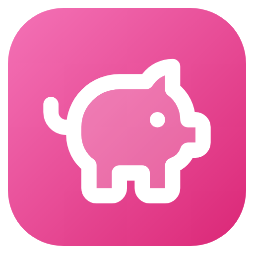

Política de privacidad
Chanchito · última actualización: 20 de octubre de 2026Qué datos maneja la app
Los gastos, ingresos, tarjetas, ahorros, metas y la configuración que cargás se guardan en un archivo local de tu equipo (en la carpeta de datos de la app de tu usuario de Windows, o en el almacenamiento privado de la app en Android), junto con los backups automáticos que hace la app.
Qué datos NO se recolectan
- No hay cuentas propias ni registro. Conectar una cuenta de Google es opcional.
- No hay servidores propios: la app funciona sin internet y sólo se conecta a Google si activás el backup en Drive.
- No hay analíticas, telemetría, publicidad ni rastreadores.
- No se venden ni se comparten datos con nadie, porque no nos llega ninguno.
Exportaciones y backups
Cuando exportás a Excel o CSV, o hacés un backup, el archivo se guarda donde vos elijas (en el celular, se abre el menú de compartir y vos elegís la app). A partir de ahí ese archivo es tuyo: si lo compartís o lo subís a otro servicio, aplica la política de ese servicio.
En Android, el sistema puede incluir los datos de la app en la copia de seguridad de tu cuenta de Google (Copia de seguridad de Android), si la tenés activada. Esa copia la maneja Google, cifrada y asociada a tu cuenta; no llega a Chanchito.
Backup en Google Drive (opcional)
En Configuración → Backups podés conectar tu cuenta de Google para que Chanchito guarde copias de tus datos en tu Drive. Si no lo activás, la app no se conecta a Google.
-
Chanchito sólo pide el permiso
drive.appdata: acceso a una carpeta oculta de tu Drive que sólo ve esta app. No puede ver, leer ni modificar el resto de tus archivos. También se usa tu dirección de mail, sólo para mostrarte con qué cuenta estás conectado. - Lo que se sube es el mismo archivo de backup que se guarda en tu equipo, con tus gastos, ingresos, tarjetas y ahorros. Va directo de tu dispositivo a tu Drive: no pasa por ningún servidor de Chanchito y nadie más que vos (y Google, como proveedor de tu Drive) tiene acceso.
- Se hace un backup por día y al cerrar la app si hubo cambios, y se guardan los últimos 7 de cada dispositivo. El permiso de acceso queda guardado de forma segura en tu dispositivo.
- Podés desconectar la cuenta cuando quieras desde la app. Para borrar los backups, en Google Drive entrá a Configuración → Administrar aplicaciones → Chanchito → Borrar datos ocultos de la app. También podés quitarle el acceso desde tu cuenta de Google.
- El uso y la transferencia a cualquier otra app de la información recibida de las API de Google cumplen con la Política de datos del usuario de los servicios de API de Google, incluidos los requisitos de Uso limitado.
Microsoft Store
Si instalaste Chanchito desde Microsoft Store, Microsoft puede recopilar datos de la descarga y del uso del sistema según su propia declaración de privacidad. Esa información no llega a Chanchito.
Google Play
Si instalaste Chanchito desde Google Play, Google puede recopilar datos de la descarga y del uso del dispositivo según su propia política de privacidad. Esa información no llega a Chanchito. La app sólo usa internet para el backup en Google Drive, si lo activás, y no pide permisos de ubicación, contactos ni cámara.
Cómo borrar tus datos
Desinstalar la app no borra tus datos, para que no los pierdas si la reinstalás. Para
borrarlos del todo, eliminá la carpeta %APPDATA%\Chanchito (o
%APPDATA%\Mis Finanzas si usaste una versión anterior). Si la instalaste desde
la Store, se borran al desinstalarla. En Android, se borran al desinstalar la app o desde
Ajustes → Apps → Chanchito → Almacenamiento → Borrar datos. Los backups en Google Drive se
borran desde Drive, como se explica más arriba.
Contacto
Si tenés dudas, escribime a chanchito.app.of@gmail.com o abrí un tema en GitHub.